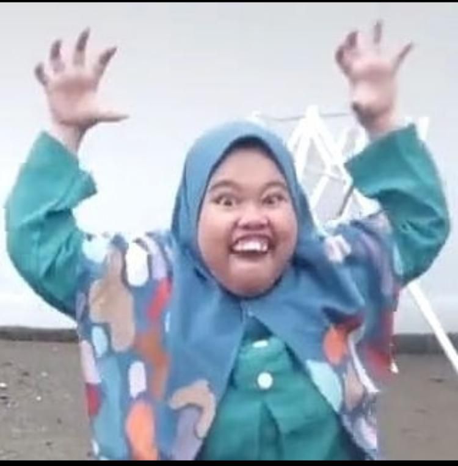

Image 1.1 Princess silpy
Eiiii Mirip kali WKWKKWKW,(image 1.1). eh sil aku gatau harus gimna biar dapet perhatian kao lagi wkwkw entahlah, ada masalah yaa? boleh cerita dong, sapa tau aku bisa bantu soalnya akhir akhirni kao kaya beda gituu dan ga seaktif dulu ato mungkin ga seceria dulu dan tiba tiba hilang :(, maaf kalo aku sok tau juga si cuma gimna men ya, trus kalo uda ada cowo juga bilang yaaa biar aku ga gimna gimna hehe, bales cht aku jugee laa :( 👉🏻👈 kalo aku ada salah juga maaf yaaaa. sekian dariku terima kasih <3